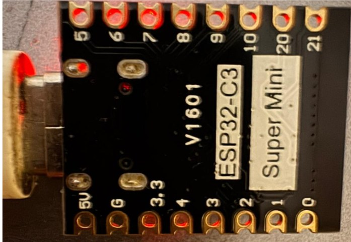
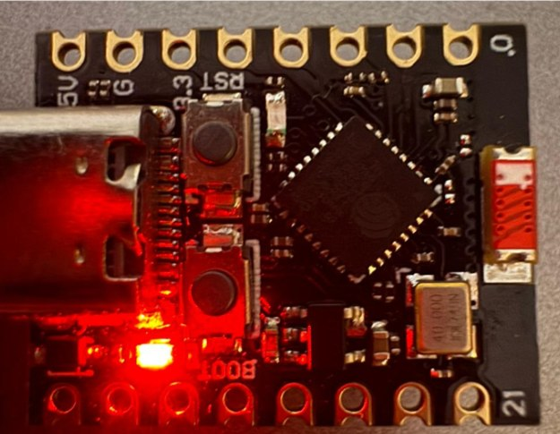

ESP32-C3 SuperMini
The ESP32-C3 SuperMini is a compact third-party board based on the Espressif ESP32-C3 RISC-V SoC.
Typical boards include native USB-C (USB Serial/JTAG), 4 MB flash, 2.4 GHz Wi-Fi, Bluetooth 5 (LE), an onboard user LED, and BOOT/RESET buttons.
 Header silkscreen (V1601) |
 USB-C, BOOT, RESET, and status LED |
Note
SuperMini is not an official Espressif board. Pin labels, LED color, flash size, and antenna layout can vary between vendors. Confirm GPIO8 (LED) and GPIO9 (BOOT) against the silkscreen on your module.
This page documents SuperMini-specific pins and NuttX configurations. Toolchain install, flashing, debugging, and peripheral support are in the main ESP32-C3 documentation.
Espressif’s larger DevKit boards are documented at ESP32-C3 DevKit.
Features
32-bit RISC-V single-core processor, up to 160 MHz
400 KB SRAM and typically 4 MB on-board flash
USB Type-C with the ESP32-C3 USB Serial/JTAG controller
2.4 GHz Wi-Fi (802.11 b/g/n) and Bluetooth 5 (LE)
Header GPIOs: GPIO0 to GPIO10, GPIO20, GPIO21
1 RESET button, 1 BOOT button, 1 onboard user LED
Pin Mapping
The V1601 silkscreen uses two rows of eight pads. USB-C is at the end next to 5V/GND. USB D-/D+ (GPIO18/GPIO19) stay on the USB-C connector and are not broken out.
Header row next to 5V (USB toward GPIO0):
5V G 3.3 4 3 2 1 0
Header row next to GPIO5 (USB toward GPIO21):
5 6 7 8 9 10 20 21
GPIO functions:
Pin |
Signal |
Notes |
|---|---|---|
GPIO0 |
ADC1_CH0; preferred general-purpose I/O |
|
GPIO1 |
ADC1_CH1; preferred general-purpose I/O |
|
GPIO2 |
ADC1_CH2; strapping pin (keep high at boot) |
|
GPIO3 |
ADC1_CH3 |
|
GPIO4 |
ADC1_CH4; JTAG MTMS |
|
GPIO5 |
ADC2_CH0; JTAG MTDI (ADC2 is limited while Wi-Fi is on) |
|
GPIO6 |
SPI2 CLK; JTAG MTCK |
|
GPIO7 |
SPI2 MOSI; JTAG MTDO |
|
GPIO8 |
Onboard LED (active-low); strapping pin |
|
GPIO9 |
BOOT button; strapping pin |
|
GPIO10 |
SPI2 CS |
|
GPIO18 |
USB_D- |
USB-C only |
GPIO19 |
USB_D+ |
USB-C only |
GPIO20 |
U0RXD |
UART0 RX (nsh serial console) |
GPIO21 |
U0TXD |
UART0 TX (nsh serial console) |
5V |
USB 5 V / external 5 V (do not combine with USB 5 V) |
|
3V3 |
3.3 V rail |
|
GND |
Ground |
Do not apply more than 3.3 V to GPIO pins.
I2C is routed through the GPIO matrix and has no fixed SuperMini pins. GPIO8/GPIO9 are a poor I2C choice because they are strapping pins and share the LED and BOOT button. Prefer GPIO0/GPIO1 or GPIO1/GPIO3.
NSH Console
usbnsh exposes NuttShell over the USB-C CDC/ACM port. This is the
usual way to use SuperMini without an external USB-UART adapter.
nsh uses UART0 on GPIO20 (RX) and GPIO21 (TX) at 115200 8N1. Connect
an external 3.3 V USB-UART adapter if you use that configuration.
Installation
Configure and build NuttX (USB console):
$ git clone https://github.com/apache/nuttx.git nuttx
$ git clone https://github.com/apache/nuttx-apps.git apps
$ cd nuttx
$ make distclean
$ ./tools/configure.sh esp32c3-supermini:usbnsh
$ make V=1
Put the board in download mode if needed, then flash with
esptool:
make flash ESPTOOL_PORT=/dev/ttyACM0 ESPTOOL_BINDIR=./
The USB Serial/JTAG device is typically /dev/ttyACM0. External USB-UART
adapters are typically /dev/ttyUSB0.
Configurations
All configurations listed below can be selected with:
$ ./tools/configure.sh esp32c3-supermini:<config_name>
nsh
Basic NuttShell configuration using UART0 (GPIO21 TX / GPIO20 RX) at 115200 bps.
usbnsh
Basic NuttShell configuration using CDC/ACM serial over the USB-C port at 115200 bps.
NuttShell (NSH) NuttX-12.8.0
nsh> uname -a
NuttX 12.8.0 ... risc-v esp32c3-supermini
gpio
NuttShell over USB, plus the GPIO example. The onboard LED is registered as an output and GPIO0 as an interrupt input:
PIN/GPIO |
Mode |
Device |
|---|---|---|
GPIO8 |
Output |
/dev/gpio0 (LED, active-low) |
GPIO0 |
Interrupt |
/dev/gpio1 |
Writing 0 to /dev/gpio0 turns the LED on; writing 1 turns
it off.
nsh> gpio -o 0 /dev/gpio0
Driver: /dev/gpio0
Output pin: Value=1
Writing: Value=0
Verify: Value=0
nsh> gpio -o 1 /dev/gpio0
Driver: /dev/gpio0
Output pin: Value=0
Writing: Value=1
Verify: Value=1
wifi
This configuration enables a wlan network interface that can be configured and initialized using:
nsh> ifup wlan0
nsh> wapi psk wlan0 mypasswd 3
nsh> wapi essid wlan0 myssid 1
nsh> renew wlan0
That associates with SSID myssid using password mypasswd. The IP
address is obtained via DHCP with renew. Check the result with
ifconfig.